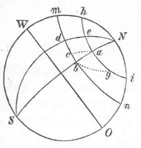

Kant: AA XIV, Physische Geographie. , Seite 556 |
|||||||
Zeile:
|
Text:
|
|
|
||||
| 01 | großen Raum der Ausbreitung zwischen Westen und Osten nimmt und einen | ||||||
| 02 | ansehnlichen Weg zurücklegt. Es stelle die vorgezeichnete Figur die Erde | ||||||
| 03 |  |
vor. N und S die beiden Pole. W. O. den Äquinoctionalkreis, | |||||
| 04 | mn und hi Parallelkreise und | ||||||
| 05 | die übrigen Meridiane. Setzt zuvor, in a sey | ||||||
| 06 | kein Wind, so hat die Luft daselbst keine andere | ||||||
| 07 | Bewegung als diejenige, welche der Erdfläche | ||||||
| 08 | unter ihr der Lage des Orts a gemäß zukommt, | ||||||
| 09 | nämlich die Hälfte hi des Parallelcirkels in | ||||||
| 10 | 12 Stunden von Westen nach Osten zu beschreiben. | ||||||
| 11 | Nunmehr nehmt die Luft aus a nach | ||||||
| 12 | b im Meridian bewegt an, und gedenkt euch, daß dieser anhebende Nordwind | ||||||
| 13 | den Bogen ab in derselben Zeit beschreiben könne, in welcher die | ||||||
| 14 | Achsendrehung der Erde den Bogen ea von Abend gegen Morgen zurücklegt, | ||||||
| 15 | so folgt, daß wenn man alle Hindernisse bei Seite setzt, die unterwegs der | ||||||
| 16 | Luft in ihrem Zuge begegnen können, sie auf der bewegten Erde am Ende | ||||||
| 17 | dieser Zeit nicht werde in b, sondern in c seyn, so daß dc = ea und cb | ||||||
| 18 | der Unterschied der ähnlichen Bogen beider Parallelcirkel ist, weil die Luft | ||||||
| 19 | mit der ihr beiwohnenden westlichen Geschwindigkeit des Orts, von wo sie | ||||||
| 20 | kam, in derselben Zeit nur den Bogen dc = ea von W nach O zurücklegen | ||||||
| 21 | kann, da die Erde indessen in dieser Breite den Bogen db beschrieben hat. | ||||||
| 22 | Da es nun einerlei ist, ob sich die Luft in Ansehung der Erde, oder diese | ||||||
| 23 | in Ansehung der Luft bewege, so wird hieraus eine zusammengesetzte Bewegung | ||||||
| 24 | erfolgen nach einem gewissen Diagonalbogen ac, wovon die Seiten | ||||||
| 25 | ab und bc jene des Windes nördliche Geschwindigkeit, diese aber den Unterschied | ||||||
| 26 | der Bewegung in beiden Parallelcirkeln vorstellen: d. i. der Wind, | ||||||
| 27 | der an sich nur eine Richtung von Norden nach Süden hatte, bekommt in | ||||||
| 28 | seinem Fortgange eine Collateralrichtung von Osten, welche mit der Annäherung | ||||||
| 29 | zum Äquator so zunehmen müßte, daß die nördliche Direction | ||||||
| 30 | beinahe völlig in eine östliche ausschlüge. | ||||||
| 31 | Mein zweiter Satz ist folgender: Ein jeder Südwind hat in unserer | ||||||
| 32 | Halbkugel eine Bestrebung beim Fortgange in einen Südwestwind auszuschlagen, | ||||||
| [ Seite 555 ] [ Seite 557 ] [ Inhaltsverzeichnis ] |
|||||||
;){kind=link}